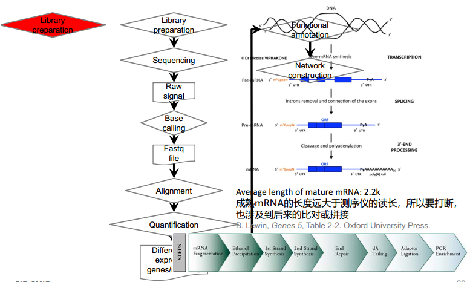

基于高通量测序平台的表观遗传学技术
- Methyl-Seq
- DNA的甲基化图谱
- DNase I-Seq
- 全基因组染色质DNA的开放程度、非基因编码区的调控元件的分布
- ChIP-Seq
- 重要转录因子以及组蛋白在染色质DNA上的结合、分布状态
- 3C-Seq
- 染色质的空间结构
- mRNA-Seq
- 以细胞为单元的转录本、重要转录因子和信号转导分子的表达水平
- ncRNA-Seq
- 非编码RNA的表达水平
RNA-Seq
RNA-Seq利用高通量的测序技术来检测组织或细胞在特定状态中所有的转录产物
- Genes
- Expression
- Alternative splices
- Nucleotide variations
- Fusions
- Noncoding RNA
- snoRNA
- mRNA-like ncRNA
- snRNA
- Antisense transcripts
- pesudogenes
- Retrotransposon
- Others functional RNAs
RNA-Seq protocol

常规RNA-Seq分析流程以及涉及的主要分析工具
干细胞血液分化的系统组学研究
血液细胞生理功能重要；谱系分化和发育阶段清晰；细胞来源丰富、临床病种繁多。
干细胞的系统组学与转化医学研究
利用转录组学测序数据挖掘分析融合基因
具有调控作用的非编码RNA（Non-coding RNA）
RNAi
lncRNA转录组学分析与应用
mRNA、miRNA和lncRNA表达谱比较
lncRNA具有分化阶段特异性。
编码基因表达趋势分析
潜在的lncRNA顺势调控转录作用。
lncRNA的动态表达谱
单细胞RNA-Seq
课后作业和问题思考
- 请简述转录组测序的基本实验流程
- 请简述转录组数据分析的主要内容
- 表观遗传学在你工作中可能有哪些应用